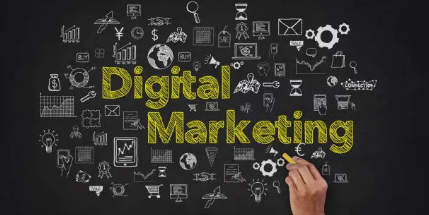
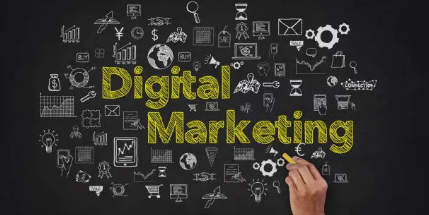
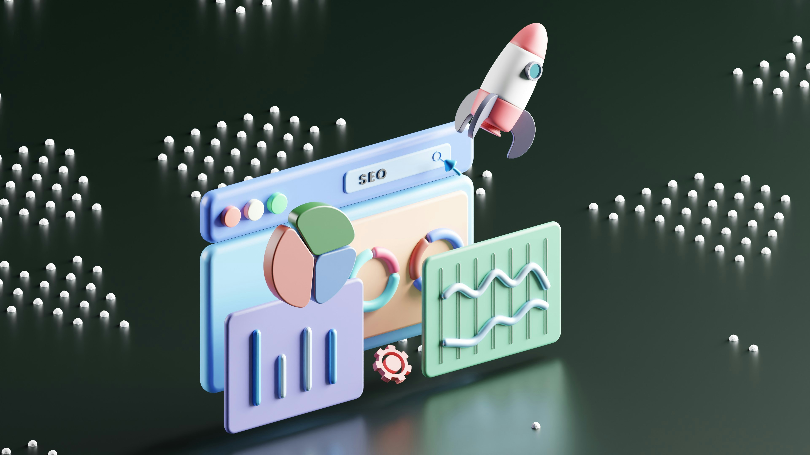

The Importance of Digital Marketing for Small Businesses in 2024
In today's fast-paced digital world, small businesses face the challenge of standing out in a crowded marketplace. As technology continues to evolve, so do the methods of reaching and engaging potential customers. Digital marketing has emerged as a powerful tool that can level the playing field for small businesses, allowing them to compete with larger enterprises and grow their customer base. In this blog, we'll explore the importance of digital marketing for small businesses in 2024 and how it can drive success.
Understanding Digital Marketing

Digital marketing encompasses all marketing efforts that use the internet and electronic devices. Businesses leverage digital channels such as search engines, social media, email, and websites to connect with current and prospective customers. Unlike traditional marketing, digital marketing offers more precise targeting, real-time results, and a broader reach.
Benefits of Digital Marketing for Small Businesses
 

1. Cost-Effective
One of the primary advantages of digital marketing is its cost-effectiveness. Traditional advertising methods, such as print, TV, or radio, can be expensive and often require significant investment. In contrast, digital marketing allows small businesses to reach a large audience at a fraction of the cost. Tools like social media advertising and email campaigns provide excellent ROI, making them accessible even to businesses with limited budgets.
2. Targeted Audience Reach
Digital marketing enables businesses to target specific demographics, locations, and interests with precision. Whether through Google Ads, Facebook advertising, or SEO strategies, small businesses can tailor their marketing efforts to reach the right audience at the right time. This targeted approach increases the likelihood of converting leads into customers.
3. Measurable Results
Unlike traditional marketing, where it’s often difficult to measure the effectiveness of a campaign, digital marketing provides measurable results. Analytics tools allow businesses to track key metrics such as website traffic, conversion rates, click-through rates, and more. This data-driven approach enables small businesses to refine their strategies and make informed decisions.
4. Improved Customer Engagement
Digital marketing channels such as social media, email, and content marketing facilitate direct communication with customers. By engaging with your audience through valuable content, responding to their queries, and addressing their concerns, small businesses can build strong relationships and foster brand loyalty.
5. Competitive Advantage
In 2024, having a robust digital marketing strategy is no longer optional—it's essential. Businesses that fail to embrace digital marketing risk falling behind their competitors. By staying ahead of trends and adopting innovative marketing techniques, small businesses can gain a competitive edge in their industry.
Key Digital Marketing Strategies for 2024
1. Search Engine Optimization (SEO)
SEO is the foundation of any successful digital marketing strategy. By optimizing your website for search engines, you can improve its visibility and attract organic traffic. Focus on keyword research, quality content, mobile optimization, and backlink building to enhance your SEO efforts.
2. Content Marketing

Content is king in digital marketing. Providing valuable and informative content that addresses your audience’s pain points can establish your business as an industry authority. Blogs, videos, infographics, and eBooks are effective content formats that can drive traffic and generate leads.
3. Social Media Marketing

Social media platforms are powerful tools for building brand awareness and engaging with customers. Develop a consistent posting schedule, create shareable content, and utilize paid advertising options to reach a broader audience. In 2024, video content and live streaming are expected to dominate social media marketing.
4. Email Marketing

Email remains one of the most effective digital marketing channels. Build an email list by offering incentives such as discounts or free resources, and use personalized email campaigns to nurture leads and convert them into loyal customers.
5. Paid Advertising

Pay-per-click (PPC) advertising, such as Google Ads or Facebook Ads, can provide immediate results by placing your business in front of potential customers. With PPC, you only pay when someone clicks on your ad, making it a cost-effective way to drive targeted traffic.
Conclusion

In 2024, digital marketing will continue to play a crucial role in the growth and success of small businesses. By leveraging the benefits of digital marketing—such as cost-effectiveness, targeted audience reach, and measurable results—small businesses can compete with larger companies and thrive in an increasingly competitive landscape. It’s time to embrace digital marketing and unlock new opportunities for your business.